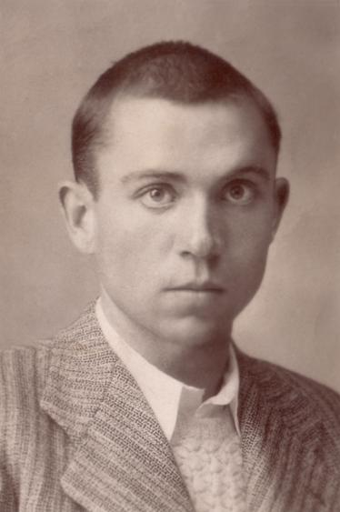
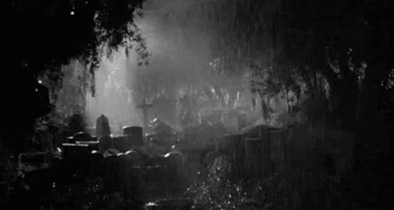

"Elegía a Ramón Sijé", de Miguel Hernández

Letra
Yo quiero ser llorando el hortelano
de la tierra que ocupas y estercolas,
compañero del alma, tan temprano.
Alimentando lluvias, caracoles
Y órganos mi dolor sin instrumento,
a las desalentadas amapolas
daré tu corazón por alimento.
Tanto dolor se agrupa en mi costado,
que por doler me duele hasta el aliento.
Un manotazo duro, un golpe helado,
un hachazo invisible y homicida,
un empujón brutal te ha derribado.
No hay extensión más grande que mi herida,
lloro mi desventura y sus conjuntos
y siento más tu muerte que mi vida.
Ando sobre rastrojos de difuntos,
y sin calor de nadie y sin consuelo
voy de mi corazón a mis asuntos.
Temprano levantó la muerte el vuelo,
temprano madrugó la madrugada,
temprano estás rodando por el suelo.
No perdono a la muerte enamorada,
no perdono a la vida desatenta,
no perdono a la tierra ni a la nada.
En mis manos levanto una tormenta
de piedras, rayos y hachas estridentes
sedienta de catástrofe y hambrienta
Quiero escarbar la tierra con los dientes,
quiero apartar la tierra parte
a parte a dentelladas secas y calientes.
Quiero minar la tierra hasta encontrarte
y besarte la noble calavera
y desamordazarte y regresarte
Volverás a mi huerto y a mi higuera:
por los altos andamios de mis flores
pajareará tu alma colmenera
de angelicales ceras y labores.
Volverás al arrullo de las rejas
de los enamorados labradores.
Alegrarás la sombra de mis cejas,
y tu sangre se irá a cada lado
disputando tu novia y las abejas.
Tu corazón, ya terciopelo ajado,
llama a un campo de almendras espumosas
mi avariciosa voz de enamorado.
A las aladas almas de las rosas...
de almendro de nata te requiero,:
que tenemos que hablar de muchas cosas,
compañero del alma, compañero.